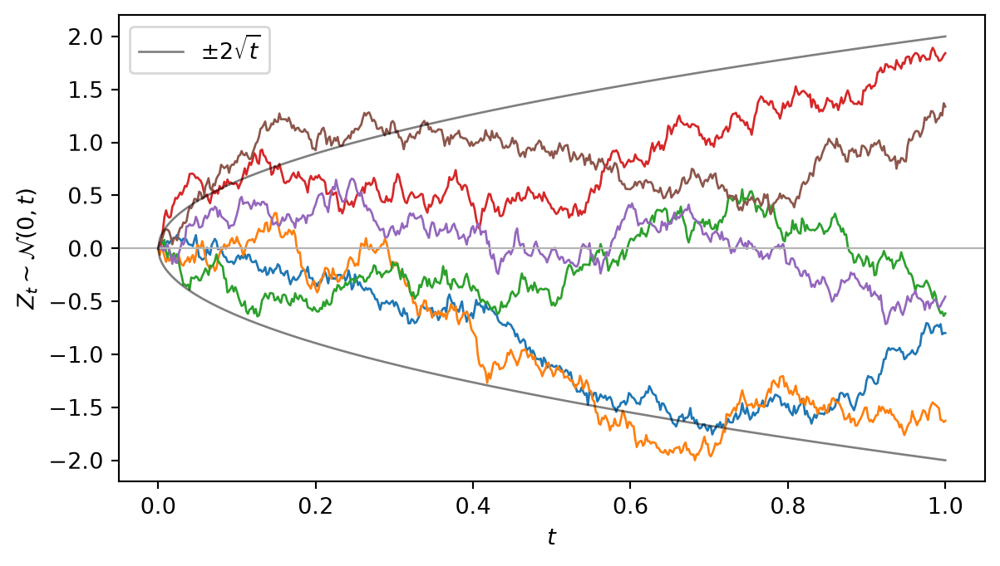

8Stochastic Processes and a Introduction to Continuous Time
So far a random variable has been a single snapshot. Finance is dynamic: prices, rates, and volatilities evolve, and information accrues over time. A stochastic process is a whole family of random variables indexed by time, \(\{X_t\}\), and it is the language of asset pricing. Formally, for a given probability space \((\Omega ,{\mathcal{F}},\mathbb{P})\), a stochastic process is a collection of \(\mathcal{F}\)-measurable random variables, which can be written as: \[
\{X(t):t\in T\}.
\]
This chapter introduces the three processes that matter most — Markov chains, martingales, and Brownian motion — and closes with a first look at Itô calculus, the differential calculus of random paths.
8.1 Filtration and Conditional Expectation
Before we get to the processes, we need to introduce the concept of filtration. Recall that in Section 5.1, we use “information” to explain \(\mathcal{F}\). We say that a larger \(\mathcal{F}\) means more information, and a smaller \(\mathcal{F}\) means less information. In a stochastic process, we have a sequence of \(\sigma\)-algebras \(\{\mathcal{F}_t\}\), each representing the information available at time \(t\). As time progresses, we gain more information, so \(\mathcal{F}_t\) grows larger.
Definition 8.1 Given a probability space \((\Omega ,{\mathcal {F}}, \mathbb{P})\), a filtration is a sequence of \(\sigma\)-algebras \(\{{\mathcal {F}}_{t}\}_{t\geq 0}\) with \({\mathcal {F}}_{t}\subseteq {\mathcal {F}}\)\[
t_{1}\leq t_{2}\implies {\mathcal {F}}_{t_{1}}\subseteq {\mathcal {F}}_{t_{2}}.
\]
Definition 8.2 A stochastic process \(\{X_t\}\) is adapted if \(X_t\) is known given \(\mathcal{F}_t\)
The filtration is the formal version of an information set, the object that conditional expectations condition on. In finance, you will see the following notations like the following again and again \[
\mathbb{E}_t(R_{t+1}).
\] This notation is a shorthand for \[
\mathbb{E}[R_{t+1}|\mathcal{F}_t],
\] the expected return at time \(t+1\) given the information available at time \(t\).
To better understand \(\mathbb{E}[R_{t+1}|\mathcal{F}_t]\), we need to redefine expectation in a formal way. In Definition 6.5 and Definition 8.3, we defined expectation and conditional expectation using PDF amd PMF. However, in a stochastic process, we have a sequence of \(\sigma\)-algebras \(\{\mathcal{F}_t\}\), and we need to define expectation conditional on the information available at time \(t\).
Definition 8.3 Let \((\Omega, \mathcal{F}, \mathbb{P})\) be a probability space, let \(\mathcal{G} \subseteq \mathcal{F}\), and let \(X\) be a random variable. The conditional expectation of \(X\) given \(\mathcal{G}\), denoted by \(\mathbb{E}[X|\mathcal{G}]\), is any random variable that satisfies
\(\mathbb{E}[X|\mathcal{G}]\) is \(\mathcal{G}\)-measurable, and
\(\int_A \mathbb{E}[X|\mathcal{G}](\omega) \, d\mathbb{P}(\omega) = \int_A X(\omega) \, d\mathbb{P}(\omega)\) for all \(A \in \mathcal{G}\).
In Definition 8.3, we defined conditional expectation of \(Y\) given \(X\) by \(\mathbb{E}(Y|X)\). Under Definition 8.3, the notation is equivalent to \(\mathbb{E}(Y|\sigma(X))\), where \(\sigma(X)\) is the \(\sigma\)-algebra generated by \(X\) (see Definition 5.8).
Example 8.1 Given a probability space \((\Omega, \mathcal{F}, \mathbb{P})\) with \(\Omega=[0,2]\), and \(\mathbb{P}\) is the uniform distribution on \([0,2]\). Let \(R_{t+1}=\omega\) denote the stock return (For simplicity, we restrict return to be in \([0,2]\). In real world, return is in \([0,\infty)\)). Now suppose that our information set at time \(t\) is \[
\mathcal{F}_t = \{\varnothing, [0,1], (1,2], \Omega\}
\] In other words, at time \(t\), we only know whether the return is in \([0,1]\) or \((1,2]\). What is the distribution of \(\mathbb{E}[R_{t+1}|\mathcal{F}_t]\)?
Since, in \(\mathcal{F}_t\), we only know whether the probabilities of two events \([0,1]\) and \((1,2]\), the probability distribution of \(\mathbb{E}[R_{t+1}|\mathcal{F}_t]\) must follows \[
\mathbb{E}[R_{t+1}|\mathcal{F}_t] =
\begin{cases}
c_1 \qquad \text{if } \omega \in [0,1] \\
c_2 \qquad \text{if } \omega \in (1,2]
\end{cases}
\] where \(\mathbb{P}(\omega \in [0,1]) = \mathbb{P}(\omega \in (1,2]) = \frac{1}{2}\). To find \(c_1\) and \(c_2\), we use the definition of conditional expectation \[
\begin{cases}
\int_{[0,1]} \mathbb{E}[R_{t+1}|\mathcal{F}_t](\omega) \, d\mathbb{P}(\omega) = \int_{[0,1]} R_{t+1}(\omega) \, d\mathbb{P}(\omega) \\
\int_{(1,2]} \mathbb{E}[R_{t+1}|\mathcal{F}_t](\omega) \, d\mathbb{P}(\omega) = \int_{(1,2]} R_{t+1}(\omega) \, d\mathbb{P}(\omega)
\end{cases}
\] Plug in \(c_1\) and \(c_2\), we have \[
\begin{cases}
c_1 \cdot \mathbb{P}(\omega \in [0,1]) = \int_{[0,1]} R_{t+1}(\omega) \, d\mathbb{P}(\omega) = \frac{1}{4} \\
c_2 \cdot \mathbb{P}(\omega \in (1,2]) = \int_{(1,2]} R_{t+1}(\omega) \, d\mathbb{P}(\omega) = \frac{3}{4}
\end{cases}
\] where the second equality in each equation follows from the expectation of a uniform distribution, e.g. \[
\int_{[0,1]} R_{t+1}(\omega) \, d\mathbb{P}(\omega) = \int_{[0,1]} R_{t+1} d\left(\frac{R_{t+1}}{2}\right) = \frac{1}{4}R_{t+1}^2\Big|_0^1 = \frac{1}{4}
\] Therefore, we have \[
\begin{cases}
c_1 = \frac{1}{2} \\
c_2 = \frac{3}{2}
\end{cases}
\]
Given a probability space \((\Omega, \mathcal{F}, \mathbb{P})\), we can derive some useful properties of conditional expectation. We denote \(X\) and \(Y\) be random variables, and \(\mathcal{H}\) and \(\mathcal{G}\) are \(\sigma\)-algebras with \(\mathcal{H} \subseteq \mathcal{G} \subseteq \mathcal{F}\). The following properties hold:
Linearity: If \(X\) and \(Y\) are random variables, and \(a,b \in \mathbb{R}\), then \[
\mathbb{E}[aX + bY|\mathcal{G}] = a\mathbb{E}[X|\mathcal{G}] + b\mathbb{E}[Y|\mathcal{G}], \qquad \text{for } a,b \in \mathbb{R}.
\]
Taking out what is known: If \(Y\) is integrable and \(X\) is bounded and \(\mathcal{G}\)-measurable, then \[
\mathbb{E}[XY|\mathcal{G}] = X\mathbb{E}[Y|\mathcal{G}].
\]
Law of iterated expectation: If \(\mathcal{H} \subseteq \mathcal{G}\), \(X\) and \(Y\) are random variables, then \[
\mathbb{E}[\mathbb{E}[X|\mathcal{G}]|\mathcal{H}] = \mathbb{E}[X|\mathcal{H}].
\]
Let’s explain and prove them one by one using the definition
Linearity is pretty straightforward. For \(\mathbb{E}[aX + bY|\mathcal{G}]\), we have \[
\begin{aligned}
&\int_A \mathbb{E}[aX + bY|\mathcal{G}](\omega) \, d\mathbb{P}(\omega) \quad \text{for all } A \in \mathcal{G} \\
&= \int_A (aX + bY)(\omega) \, d\mathbb{P}(\omega) \quad \text{for all } A \in \mathcal{G}\\
&= a\int_A X(\omega) \, d\mathbb{P}(\omega) + b\int_A Y(\omega) \, d\mathbb{P}(\omega) \quad \text{for all } A \in \mathcal{G}\\
&= a\int_A \mathbb{E}[X|\mathcal{G}](\omega) \, d\mathbb{P}(\omega) + b\int_A \mathbb{E}[Y|\mathcal{G}](\omega) \, d\mathbb{P}(\omega) \quad \text{for all } A \in \mathcal{G}
\end{aligned}
\]
“Taking out what is known” is hard to prove but easy to understand (so we omit the proof). In taking out what is known, \(X\) is \(\mathcal{G}\)-measurable. We defined \(\mathcal{G}\)-measurable in Definition 5.8. In short, \(X\) is \(\mathcal{G}\)-measurable if its value is determined by the information in \(\mathcal{G}\). Notice that \(X\) need not be a constant; it is simply known once we condition on \(\mathcal{G}\). For example, in asset pricing \(R_t\) is known at time \(t\), so it is \(\mathcal{F}_t\)-measurable. Therefore, we can take it out of the conditional expectation: \[
\mathbb{E}(R_t R_{t+1}|\mathcal{F}_t) = R_t \mathbb{E}(R_{t+1}|\mathcal{F}_t),
\]
Law of iterated expectation is a very important property in asset pricing. To understand it, we can think about the following question: at time \(t\), we want to know what will be our best prediction of \(R_{t+2}\) at \(t+1\)? Suppose nothing news happens in the period from \(t\) to \(t+1\), our best prediction of \(R_{t+2}\) at \(t+1\) is the same as our best prediction of \(R_{t+2}\) at \(t\). This is the law of iterated expectation. The inner expectation \(\mathbb{E}(R_{t+2}|\mathcal{F}_{t+1})\) is the best prediction of \(R_{t+2}\) at \(t+1\), and the outer expectation \(\mathbb{E}[\mathbb{E}(R_{t+2}|\mathcal{F}_{t+1})|\mathcal{F}_t]\) is the best prediction of \(\mathbb{E}(R_{t+2}|\mathcal{F}_{t+1})\) at \(t\). The law of iterated expectation says that the best prediction of future’s best prediction is the same as today’s best prediction.
Let’s prove the law of iterated expectation. We have \[
\int_A \mathbb{E}[\mathbb{E}[X|\mathcal{G}]|\mathcal{H}](\omega) \, d\mathbb{P}(\omega) = \int_A \mathbb{E}[X|\mathcal{G}](\omega) \, d\mathbb{P}(\omega) \quad \text{for all } A \in \mathcal{H}
\] By definition of conditional expectation, \[
\int_A \mathbb{E}[X|\mathcal{G}](\omega) \, d\mathbb{P}(\omega) = \int_A X(\omega) \, d\mathbb{P}(\omega) \quad \text{for all } A \in \mathcal{G}
\] Since \(\mathcal{H} \subseteq \mathcal{G}\), \(A \in \mathcal{G}\) implies \(A \in \mathcal{H}\). Therefore, the above equation holds for all \(A \in \mathcal{H}\), \[
\begin{aligned}
\int_A \mathbb{E}[X|\mathcal{G}](\omega) \, d\mathbb{P}(\omega)
&= \int_A X(\omega) \, d\mathbb{P}(\omega) \quad \text{for all } A \in \mathcal{H} \\
&= \int_A \mathbb{E}[X|\mathcal{H}](\omega) \, d\mathbb{P}(\omega) \quad \text{for all } A \in \mathcal{H}
\end{aligned}
\] Plugging this into the first equation, we have \[
\mathbb{E}[\mathbb{E}[X|\mathcal{G}]|\mathcal{H}] = \mathbb{E}[X|\mathcal{H}]
\]
8.2 Markov Process
We start with the discrete-time case, where time moves in steps \(t=0,1,2,\dots\). A discrete-time Markov chain is a stochastic process whose future depends on the past only through the current state. Once we know where the process is now, the earlier history no longer helps predict the next state.
Definition 8.4 Let \(\{X_t\}_{t=0}^{\infty}\) be a stochastic process taking values in a finite or countable state space \(S\). The process is a discrete-time Markov chain if, for all states \(i_0,\dots,i_t,j\in S\), \[
\mathbb{P}(X_{t+1}=j\mid X_t=i_t,X_{t-1}=i_{t-1},\dots,X_0=i_0)
=
\mathbb{P}(X_{t+1}=j\mid X_t=i_t),
\] whenever the conditional probability is well-defined.
This is called the Markov property. It does not say that the future is independent of the present. It says that the future is conditionally independent of the past once the present is known. In finance, this is a useful modeling simplification: tomorrow’s regime, credit rating, or interest-rate state may depend on today’s state, but not directly on the entire path by which we arrived there.
If the transition probabilities do not depend on time, the chain is called time-homogeneous. In that case, we write \[
p_{ij}=\mathbb{P}(X_{t+1}=j\mid X_t=i),
\] where \(p_{ij}\) is the probability of moving from state \(i\) to state \(j\) in one step. The transition probabilities are collected in the transition matrix\[
\boldsymbol{P}
=
\begin{bmatrix}
p_{11} & p_{12} & \cdots & p_{1m}\\
p_{21} & p_{22} & \cdots & p_{2m}\\
\vdots & \vdots & \ddots & \vdots\\
p_{m1} & p_{m2} & \cdots & p_{mm}
\end{bmatrix}
\] when the state space is \(S=\{1,\dots,m\}\). Each row is a probability distribution, so \[
p_{ij}\ge 0,
\qquad
\sum_{j=1}^m p_{ij}=1
\quad \text{for each } i.
\]
Suppose \(\boldsymbol{\pi}_t\) is a row vector containing the distribution of \(X_t\): \[
\boldsymbol{\pi}_t
=
\begin{bmatrix}
\mathbb{P}(X_t=1) & \cdots & \mathbb{P}(X_t=m)
\end{bmatrix}.
\] Then the distribution one step later is \[
\boldsymbol{\pi}_{t+1}=\boldsymbol{\pi}_t\boldsymbol{P}.
\] Iterating forward, \[
\boldsymbol{\pi}_{t+n}=\boldsymbol{\pi}_t\boldsymbol{P}^n.
\] Thus, discrete-time Markov chains turn dynamic probability questions into matrix multiplication.
The entries of \(\boldsymbol{P}^n\) have a direct probabilistic meaning: \[
(\boldsymbol{P}^n)_{ij}=\mathbb{P}(X_{t+n}=j\mid X_t=i).
\] To go from state \(i\) to state \(j\) in two steps, for example, the chain can pass through any intermediate state \(k\): \[
\mathbb{P}(X_{t+2}=j\mid X_t=i)
=
\sum_{k\in S}
\mathbb{P}(X_{t+1}=k\mid X_t=i)
\mathbb{P}(X_{t+2}=j\mid X_{t+1}=k).
\]
Another important object is the stationary distribution.
Definition 8.5 A probability row vector \(\boldsymbol{\pi}\) is a stationary distribution for a transition matrix \(\boldsymbol{P}\) if \[
\boldsymbol{\pi}=\boldsymbol{\pi}\boldsymbol{P}.
\]
If \(X_t\) has stationary distribution \(\boldsymbol{\pi}\), then \[
\boldsymbol{\pi}_{t+1}=\boldsymbol{\pi}\boldsymbol{P}=\boldsymbol{\pi}.
\] In other words, once the chain has the stationary distribution, its distribution does not change over time. Algebraically, \(\boldsymbol{\pi}\) is a left eigenvector of \(\boldsymbol{P}\) with eigenvalue \(1\), normalized so that its entries sum to one.
The idea of a continuous-time Markov process is exactly the same as in discrete time: conditional on the current state, the past contains no additional information about the future. The difference is that time now moves continuously. Instead of observing the process only at dates \(0,1,2,\dots\), we can observe it at any time \(t\ge 0\).
Before giving the definition, we need to be careful about notation. Strictly speaking, we have defined conditional expectation given a \(\sigma\)-algebra, not “conditional probability given a \(\sigma\)-algebra” as a new primitive object. The notation \[
\mathbb{P}(A\mid \mathcal{G})
\] means the conditional expectation of the indicator of the event \(A\): \[
\mathbb{P}(A\mid \mathcal{G})
:=
\mathbb{E}[\mathbf{1}_A\mid \mathcal{G}].
\] Therefore, \[
\mathbb{P}(X_t\in B\mid \mathcal{F}_s)
\] means \[
\mathbb{E}[\mathbf{1}_{\{X_t\in B\}}\mid \mathcal{F}_s].
\] This is a random variable measurable with respect to \(\mathcal{F}_s\). Similarly, \[
\mathbb{P}(X_t\in B\mid X_s)
\] means \[
\mathbb{E}[\mathbf{1}_{\{X_t\in B\}}\mid \sigma(X_s)],
\] where \(\sigma(X_s)\) is the information generated by the current state \(X_s\).
Definition 8.6 A continuous-time Markov process\(\{X_{t}\}_{t\geq 0}\) is a stochastic process adapted to a filtration \(\{\mathcal {F}_t\}_{t\geq 0}\) such that, for all \(0 \leq s \leq t\) and every Borel set \(B\in\mathcal B(\mathbb R)\), \[
\mathbb{E}[\mathbf{1}_{\{X_t\in B\}}\mid \mathcal{F}_s]
=
\mathbb{E}[\mathbf{1}_{\{X_t\in B\}}\mid \sigma(X_s)].
\] Equivalently, using the shorthand above, \[
\mathbb{P}(X_t\in B\mid \mathcal{F}_s)
=
\mathbb{P}(X_t\in B\mid X_s).
\]
The definition says that the conditional distribution of the future state \(X_t\), given all information available at time \(s\), depends only on the current state \(X_s\). The full history in \(\mathcal{F}_s\) adds no extra predictive information once \(X_s\) is known.
8.3 Brownian motion
Brownian motion is a continuous-time stochastic process that is widely used in finance. It satisfies the Markov property.
Definition 8.7 A standard Brownian motion (or Wiener process) \(\{Z_t\}_{t \ge 0}\) is a process with:
\(Z_0 = 0\);
independent increments: for \(s < t\), \(Z_t - Z_s\) is independent of the past \(\mathcal{F}_s\);
normal increments: \(Z_t - Z_s \sim \mathcal{N}(0,\ t - s)\) — variance grows with elapsed time;
continuous paths: \(Z_t\) is almost surely continuous.
The first three properties are the defining features of Brownian motion. The fourth property is a technical condition that ensures the process has no jumps, but we will not explain it in detail here.
We can prove the Markov property of Brownian motion using the definition. Let \(B\) be a Borel set. Remember that the conditional probability notation below means conditional expectation of an indicator. For \(s < t\), we have \[
\mathbb{E}(\mathbf{1}_{\{Z_t \in B\}} \mid \mathcal{F}_s) = \mathbb{E}(\mathbf{1}_{\{Z_t - Z_s + Z_s \in B\}} \mid \mathcal{F}_s).
\] Since \(Z_t - Z_s\) is independent of \(\mathcal{F}_s\) and \(Z_s\) is \(\mathcal{F}_s\)-measurable, the conditional distribution of \(Z_t-Z_s+Z_s\) given \(\mathcal{F}_s\) depends on \(\mathcal{F}_s\) only through the known value of \(Z_s\). Therefore, \[
\mathbb{E}(\mathbf{1}_{\{Z_t \in B\}} \mid \mathcal{F}_s) = \mathbb{E}(\mathbf{1}_{\{Z_t - Z_s + Z_s \in B\}} \mid \sigma(Z_s)) = \mathbb{E}(\mathbf{1}_{\{Z_t \in B\}} \mid Z_s).
\]
Code
import numpy as npimport matplotlib.pyplot as pltrng = np.random.default_rng(1)T, n_steps, n_paths =1.0, 500, 6dt = T / n_stepst = np.linspace(0, T, n_steps +1)# increments ~ N(0, dt); cumulative sum gives the pathsdW = rng.normal(0, np.sqrt(dt), size=(n_paths, n_steps))Z = np.concatenate([np.zeros((n_paths, 1)), np.cumsum(dW, axis=1)], axis=1)fig, ax = plt.subplots(figsize=(7, 3.8))for path in Z: ax.plot(t, path, lw=1)ax.axhline(0, color="0.7", lw=0.8)# +/- one standard deviation band, sd = sqrt(t)ax.plot(t, 2*np.sqrt(t), "-", lw=1, label=r"$\pm2\sqrt{t}$", color='black', alpha=0.5)ax.plot(t, -2*np.sqrt(t), "-", lw=1, color='black', alpha=0.5)ax.set_xlabel(r"$t$"); ax.set_ylabel(r"$Z_t\sim\mathcal{N}(0,t)$")ax.legend(loc="upper left")plt.show()

Figure 8.1
Example 8.2 Calculate the following two moments of Brownian motion \(Z_t\):
\(\mathbb{E}[Z_t - Z_s]\), where \(s < t\)
\(\mathbb{E}[(Z_t - Z_s)^2]\), where \(s < t\)
We use the definition \(Z_t - Z_s \sim \mathcal{N}(0, t-s)\). The first moment is the mean of the normal distribution, and the second moment is the variance of the normal distribution. \[
\begin{aligned}
\mathbb{E}[Z_t - Z_s] &= 0 \\
\mathbb{E}[(Z_t - Z_s)^2] &= t - s
\end{aligned}
\]
Example 8.3 Calculate the quadratic variation of \(Z_t\) over the interval \([0,T]\). \[
[Z]_T = \lim_{n \to \infty} \sum_{i=0}^{n-1} (Z_{t_{i+1}} - Z_{t_i})^2
\] where \(0 = t_0 < t_1 < \dots < t_n = T\) is a partition of the interval \([0,T]\). \(n\to\infty\) means that the partition becomes finer and finer.
It is beyond the scope of this course to rigorously calculate the quadratic variation of Brownian motion. Instead, we calculate it by assuming that the partition is uniform, i.e. \(t_i = \frac{i}{n}T\), so \(t_{i+1} - t_i = \frac{T}{n}\). Then we use the law of large numbers. Using the definition of Brownian motion, we have \[
(Z_{t_{i+1}} - Z_{t_i}) \sim \mathcal{N}(0, t_{i+1} - t_i).
\] By uniform partition, we have \(t_{i+1} - t_i = \frac{T}{n}\). Therefore, we can write \[
(Z_{t_{i+1}} - Z_{t_i})^2 = \frac{T}{n} \left(\frac{Z_{t_{i+1}} - Z_{t_i}}{\sqrt{T/n}}\right)^2
\] Denote \(Y_i = \frac{Z_{t_{i+1}} - Z_{t_i}}{\sqrt{T/n}}\). We have \(Y_i \sim \mathcal{N}(0, 1)\) and \(Y_i\) are independent for different \(i\) because of the independent increments property of Brownian motion. Therefore, we can write \[
\sum_{i=0}^{n-1} (Z_{t_{i+1}} - Z_{t_i})^2 = T \left(\frac{1}{n} \sum_{i=0}^{n-1} Y_i^2\right)
\] By the law of large numbers, \[
\lim_{n \to \infty} \frac{1}{n} \sum_{i=0}^{n-1} Y_i^2 \to \mathbb{E}[Y_i^2] = 1.
\] Therefore, we have \[
[Z]_T = \lim_{n \to \infty} \sum_{i=0}^{n-1} (Z_{t_{i+1}} - Z_{t_i})^2 = T.
\]
The above example is a very important result in stochastic calculus. In an informal way, we write \[
(dZ_t)^2 = dt
\] This result is used in the derivation of Itô’s lemma, which is a fundamental result in stochastic calculus.
8.4 Itô Integral
In this section, we briefly introduce the Itô integral in an intuitive way. In basic calculus, we define the integral of a function \(f(z)\) over an interval \([0,T]\) as the limit of a Riemann sum: \[
\int_0^T f(z) dz
\] where \(f(z)\) is a deterministic function and \(z\) is a deterministic variable. In stochastic calculus, we want to define the integral of a stochastic process \(X_t\) with respect to a Brownian motion \(Z_t\) over an interval \([0,T]\): \[
\int_0^T X_t dZ_t
\] The Itô integral is one of the most important concepts in stochastic calculus. It is the continuous-time analog of the discrete-time sum \[
\sum_{t=0}^{T-1} X_t (Z_{t+1}-Z_t),
\] Where \(X_t\) is an adapted process and \(Z_t\) is a Brownian motion. The intuitive idea is keeping \(X_t\) constant over the interval \([t, t+1]\) and multiplying it by the increment of Brownian motion \(Z_{t+1}-Z_t\).
Now we consider the derivative of \(f(Z_t)\) with respect to \(Z_t\). In basic calculus, we have \[
df(Z_t) = f'(Z_t) dZ_t
\] However, as we have seen in Example 8.3, \((dZ_t)^2 = dt\), the second order term is not negligible. \[
df(Z_t) = f'(Z_t) dZ_t + \frac{1}{2} f''(Z_t) (dZ_t)^2 = f'(Z_t) dZ_t + \frac{1}{2} f''(Z_t) dt
\]
Definition 8.8 Let \(f(t, Z_t)\) be a twice continuously differentiable function of \(t\) and \(Z_t\). Then the differential of \(f(t, Z_t)\) is given by \[
df(t, Z_t) = \frac{\partial f}{\partial t} dt + \frac{\partial f}{\partial Z_t} dZ_t + \frac{1}{2} \frac{\partial^2 f}{\partial Z_t^2} dt
\]
Note that we will not rigorously define “\(dZ_t\)”. The only thing you need to remember is \[
(dZ_t)^2 = dt
\] and take the second order term into account when calculating the differential of a function of \(Z_t\).
Example 8.4 Let \(S_t\) be the price of a stock at time \(t\), and let \(Z_t\) be a standard Brownian motion. Then the process \(S_t\) is said to follow a geometric Brownian motion if it satisfies the stochastic differential equation \[
dS_t = \mu S_t dt + \sigma S_t dZ_t,
\] where \(\mu\) and \(\sigma\) are constants.
Question: What is the solution of \(S_T\)? What is the expected value of \(S_T\)?
Let’s apply Itô’s lemma to \(f(t, Z_t) = \ln S_t\). We have \[
\begin{aligned}
d\ln S_t &= \frac{1}{S_t} dS_t - \frac{1}{2} \frac{1}{S_t^2} (dS_t)^2 \\
&= \frac{1}{S_t} (\mu S_t dt + \sigma S_t dZ_t) - \frac{1}{2} \frac{1}{S_t^2} (\sigma S_t dZ_t)^2 \\
&= \mu dt + \sigma dZ_t - \frac{1}{2} \sigma^2 dt \\
&= (\mu - \frac{1}{2} \sigma^2) dt + \sigma dZ_t
\end{aligned}
\] Take the integral on both sides, we have \[
\begin{aligned}
\int_0^T d\ln S_t &= \int_0^T (\mu - \frac{1}{2} \sigma^2) dt + \int_0^T \sigma dZ_t \\
\ln S_t \big|_0^T &= (\mu - \frac{1}{2} \sigma^2) T + \sigma Z_T \\
\ln S_T &= \ln S_0 + (\mu - \frac{1}{2} \sigma^2) T + \sigma Z_T
\end{aligned}
\] Therefore, \[
S_T = S_0 e^{(\mu - \frac{1}{2} \sigma^2) T + \sigma Z_T}
\]
To find the expected value of \(S_T\), we note that the distribution of \(S_T\) is lognormal as \(Z_T \sim \mathcal{N}(0, T)\). Therefore, we have \[
\mathbb{E}[S_T] = S_0 e^{(\mu - \frac{1}{2} \sigma^2) T} \mathbb{E}[e^{\sigma Z_T}] = S_0 e^{(\mu - \frac{1}{2} \sigma^2) T} e^{\frac{1}{2} \sigma^2 T} = S_0 e^{\mu T}
\]
8.5 No Arbitrage
In Chapter 1, we have introduced the concept of no arbitrage and binomial tree model. In binomial tree model, we have 2 states in each period. In continuous time, we can have infinite states in each period.
Let’s consider the following example. In the world, we only one shock \(Z_t\). Suppose we have a stock following a geometric Brownian motion \[
dS_t = \mu S_t dt + \sigma S_t dZ_t
\] and a risk-free bond following \[
dB_t = r B_t dt
\] Now we consider a third security. Since there’s only one shock \(Z_t\) in the world, the third security must be a function of \(Z_t\). Therefore, we can write \[
dP_t = f(t, P_t) dt + g(t, P_t) dZ_t
\] where \(f\) and \(g\) are some functions.
By no arbitrage, if \(g(t, P_t) = \sigma P_t\), then \[
f(t, P_t) = \mu P_t.
\] Otherwise, if \(f(t, P_t) > \mu P_t\), we can arbitrage by shorting the stock and longing the third security.
The key difference between discrete time and continuous time is that in discrete time, we replicate payoffs in one period. In continuous time, we replicate payoffs in period of \(dt\).
Let’s consider to replicate the third security by the stock and the bond. We can buy \(\Delta_t\) shares of the stock such that \[
\Delta_t S_t = g(t, P_t)
\]
In Chapter 1, we introduced the concepts of no arbitrage and the binomial tree model. In the binomial tree model, there are two possible states in each period. In continuous time, uncertainty can instead have a continuum of possible realizations.
Let’s consider the following example. Suppose that there is only one source of uncertainty in the economy, represented by a Brownian motion \(Z_t\). We have a stock whose price follows a geometric Brownian motion, \[
dS_t=\mu S_t\,dt+\sigma S_t\,dZ_t,
\] and a risk-free bond satisfying \[
dB_t=rB_t\,dt.
\] Now consider a third security with price \(P_t\). Since all uncertainty in the economy is generated by \(Z_t\), suppose that \(P_t\) follows an Itô process driven by the same Brownian motion: \[
dP_t=f(t,P_t)\,dt+g(t,P_t)\,dZ_t,
\] where \(f\) and \(g\) are some functions.
Applying the same idea as in the binomial tree model, we want to construct a portfolio of the stock and the risk-free bond that replicates the third security. The difference is that in the binomial tree model we match payoffs across states one period later, whereas in continuous time we match the security’s value and risk exposure over an infinitesimal interval \(dt\).
Let \(\Delta_t\) denote the number of shares of stock and let \(\beta_t\) denote the number of units of the risk-free bond. The value of the replicating portfolio is \[
V_t=\Delta_tS_t+\beta_tB_t.
\] Its change in value is \[
dV_t=\Delta_t\,dS_t+\beta_t\,dB_t.
\] Substituting the dynamics of \(S_t\) and \(B_t\), \[
dV_t = \Delta_t(\mu S_t\,dt+\sigma S_t\,dZ_t)+\beta_t rB_t\,dt =
\left(\Delta_t\mu S_t+r\beta_tB_t\right)dt+\Delta_t\sigma S_t\,dZ_t.
\] To replicate \(P_t\), we first need the portfolio to have the same current value: \[
V_t=P_t \qquad\text{or equivalently,}\qquad \Delta_tS_t+\beta_tB_t=P_t.
\] Second, the portfolio must have the same exposure to the Brownian shock \(dZ_t\). Hence, \[
\Delta_t\sigma S_t=g(t,P_t).
\] This determines the stock position: \[
\Delta_t=\frac{g(t,P_t)}{\sigma S_t}.
\] Rearranging the value-matching condition, we can solve for the bond position: \[
\beta_tB_t=P_t-\Delta_tS_t=P_t-\frac{g(t,P_t)}{\sigma}.
\] Now consider the drift of this replicating portfolio. Substituting these positions into \(dV_t\), we obtain \[
\begin{aligned}
dV_t
&=\left[\Delta_t\mu S_t+r\beta_tB_t\right]dt + g(t,P_t)dZ_t\\
&=\left[\frac{\mu}{\sigma}g(t,P_t)+r\left(P_t-\frac{g(t,P_t)}{\sigma}\right)\right]dt + g(t,P_t)dZ_t\\
&=\left[rP_t+\frac{\mu-r}{\sigma}g(t,P_t)\right]dt + g(t,P_t)dZ_t.
\end{aligned}
\] Now compare this with the dynamics of the third security: \[
dP_t=f(t,P_t)\,dt+g(t,P_t)\,dZ_t.
\] Since \(V_t=P_t\) and the two securities have exactly the same exposure to the only source of shock \(dZ_t\), no arbitrage requires their drifts to be the same as well. Therefore, \[
f(t,P_t)=rP_t+\frac{\mu-r}{\sigma}g(t,P_t).
\] The term \(\frac{\mu-r}{\sigma}\) is called the price of risk. We are more familar with its other name – Sharpe ratio. This equation is important. The functions \(f\) and \(g\) cannot be chosen independently. Once the security’s exposure \(g(t,P_t)\) to the aggregate Brownian shock is given, no arbitrage determines its expected return \(f(t,P_t)\).
Example 8.5 (Stochastic Discount Factor) Define another geometric Brownian motion \[
d\Lambda_t = -r\Lambda_t\,dt-\frac{\mu-r}{\sigma}\Lambda_t\,dZ_t.
\] What is \(\mathbb{E}(d(\Lambda_tP_t))\)?
Applying Itô’s lemma (taking both the first and second derivatives), we have \[
d(\Lambda_tP_t) = \Lambda_t\,dP_t + \frac{1}{2} d\Lambda_t\,dP_t + P_t\,d\Lambda_t + \frac{1}{2} dP_t\,d\Lambda_t = \Lambda_t\,dP_t + P_t\,d\Lambda_t + d\Lambda_t\,dP_t
\] We compute the terms one by one. The first term is \[
\begin{aligned}
\Lambda_t\,dP_t
&= \Lambda_t\left(f(t,P_t)\,dt+g(t,P_t)\,dZ_t\right) \\
&= \Lambda_t f(t,P_t)\,dt + \Lambda_t g(t,P_t)\,dZ_t
\end{aligned}
\] The second term is \[
\begin{aligned}
P_t\,d\Lambda_t
&= P_t\left(-r\Lambda_t\,dt-\frac{\mu-r}{\sigma}\Lambda_t\,dZ_t\right) \\
&= -rP_t\Lambda_t\,dt-\frac{\mu-r}{\sigma}P_t\Lambda_t\,dZ_t
\end{aligned}
\] The third term is \[
\begin{aligned}
d\Lambda_t\,dP_t
&= \left(-r\Lambda_t\,dt-\frac{\mu-r}{\sigma}\Lambda_t\,dZ_t\right)\left(f(t,P_t)\,dt+g(t,P_t)\,dZ_t\right)\\
&= -\frac{\mu-r}{\sigma}\Lambda_t g(t,P_t)\,dt
\end{aligned}
\] The second equality follows from the fact that \((dt)^2=0\), \(dt\,dZ_t=0\), and \((dZ_t)^2=dt\). Therefore, we have \[
d(\Lambda_tP_t) = \Lambda_t f(t,P_t)\,dt + \Lambda_t g(t,P_t)\,dZ_t -rP_t\Lambda_t\,dt-\frac{\mu-r}{\sigma}P_t\Lambda_t\,dZ_t -\frac{\mu-r}{\sigma}\Lambda_t g(t,P_t)\,dt
\] As \(dZ_t\sim\mathcal{N}(0,dt)\), we have \(\mathbb{E}(dZ_t)=0\). Therefore, taking expectation on both sides, we have \[
\mathbb{E}[d(\Lambda_tP_t)] = \Lambda_t\left[f(t,P_t)-rP_t-\frac{\mu-r}{\sigma}g(t,P_t)\right]dt
\] Recall that by no arbitrage, we have \(f(t,P_t)=rP_t+\frac{\mu-r}{\sigma}g(t,P_t)\). Therefore, we have \[
\mathbb{E}[d(\Lambda_tP_t)] = 0
\]
The above example shows that a fairly priced security satisfies the following property: \[
\mathbb{E}[d(\Lambda_tP_t)] = 0
\] where \[
\frac{d\Lambda_t}{\Lambda_t} = -r\,dt-\frac{\mu-r}{\sigma}\,dZ_t
\]
Example 8.6 (Risk-neutral measure) Define a new Brownian motion \(Z_t^{\mathbb Q}\) by \[
dZ_t^{\mathbb Q} = dZ_t + \frac{\mu-r}{\sigma}\,dt
\] What is the dynamics of \(P_t\) under the new Brownian motion \(Z_t^{\mathbb Q}\)?
Plugging in \(dZ_t = dZ_t^{\mathbb Q} - \frac{\mu-r}{\sigma}\,dt\) into the dynamics of \(P_t\), we have \[
\begin{aligned}
dP_t &= f(t,P_t)\,dt + g(t,P_t)\,dZ_t \\
&= f(t,P_t)\,dt + g(t,P_t)\left(dZ_t^{\mathbb Q} - \frac{\mu-r}{\sigma}\,dt\right) \\
&= \left[f(t,P_t) - \frac{\mu-r}{\sigma}g(t,P_t)\right]dt + g(t,P_t)\,dZ_t^{\mathbb Q}
\end{aligned}
\] By no arbitrage, we have \(f(t,P_t) = rP_t + \frac{\mu-r}{\sigma}g(t,P_t)\). Therefore, we have \[
dP_t = rP_t\,dt + g(t,P_t)\,dZ_t^{\mathbb Q}
\]
The above example shows that under the new Brownian motion \(Z_t^{\mathbb Q}\), the expected return of the security is equal to the risk-free rate.
8.6 Black-Scholes-Merton Model
Now we are ready to introduce the Black-Scholes-Merton model. Black-Scholes-Merton model is a continuous-time model for pricing options. It assumes that the stock price follows a geometric Brownian motion and the risk-free rate is constant. \[
dS_t = \mu S_t dt + \sigma S_t dZ_t \quad \text{and} \quad dB_t = r B_t dt
\] Options are derivatives whose payoff depends on the price of the underlying stock. Therefore, we can write the price of an option as a function of the stock price and time: \(C(t, S_t)\). Note that we need to include time \(t\) as an argument because the option has a maturity date. By Itô’s lemma, we have \[
\begin{aligned}
dC(t, S_t)
&= \frac{\partial C}{\partial t} dt + \frac{\partial C}{\partial S_t} dS_t + \frac{1}{2} \frac{\partial^2 C}{\partial S_t^2} (dS_t)^2 \\
&= \frac{\partial C}{\partial t} dt + \frac{\partial C}{\partial S_t} (\mu S_t dt + \sigma S_t dZ_t) + \frac{1}{2} \frac{\partial^2 C}{\partial S_t^2} (\sigma^2 S_t^2 dt) \\
&= \left[\frac{\partial C}{\partial t} + \mu S_t \frac{\partial C}{\partial S_t} + \frac{1}{2} \sigma^2 S_t^2 \frac{\partial^2 C}{\partial S_t^2}\right] dt + \sigma S_t \frac{\partial C}{\partial S_t} dZ_t
\end{aligned}
\] As we mentioned before, if there is no arbitrage, the expected return of the option must satisfy the following equation: \[
\frac{\partial C}{\partial t} + \mu S_t \frac{\partial C}{\partial S_t} + \frac{1}{2} \sigma^2 S_t^2 \frac{\partial^2 C}{\partial S_t^2} = rC_t + \frac{\mu-r}{\sigma}\sigma S_t \frac{\partial C}{\partial S_t}
\] Rearranging the terms, we have the famous Black-Scholes-Merton partial differential equation: \[
\frac{\partial C}{\partial t} + \frac{1}{2} \sigma^2 S_t^2 \frac{\partial^2 C}{\partial S_t^2} + r S_t \frac{\partial C}{\partial S_t} - rC = 0
\]